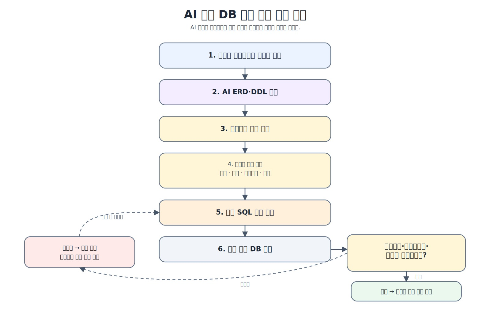
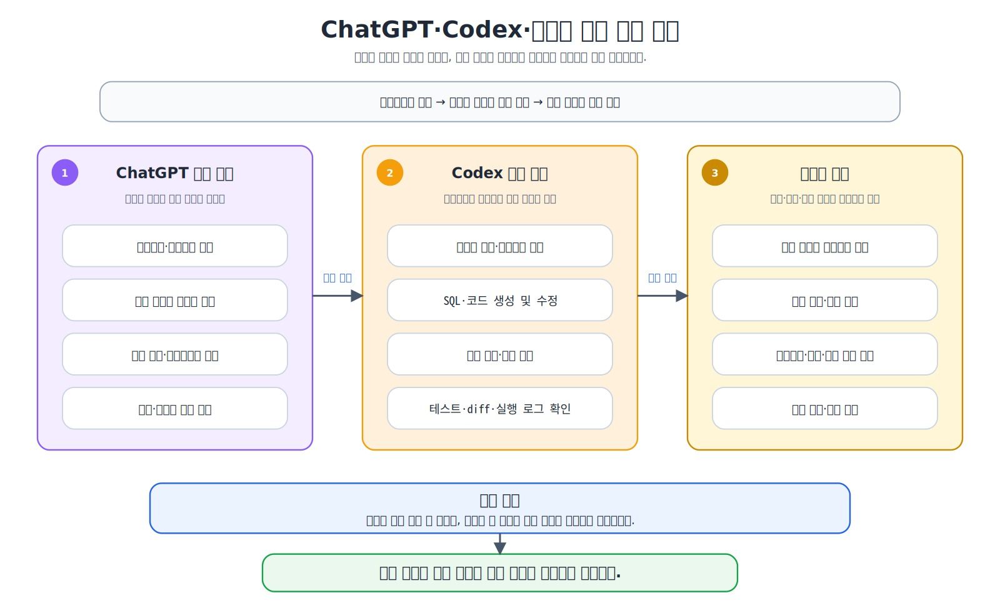
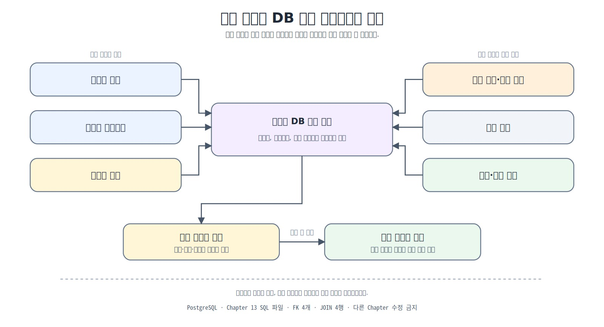
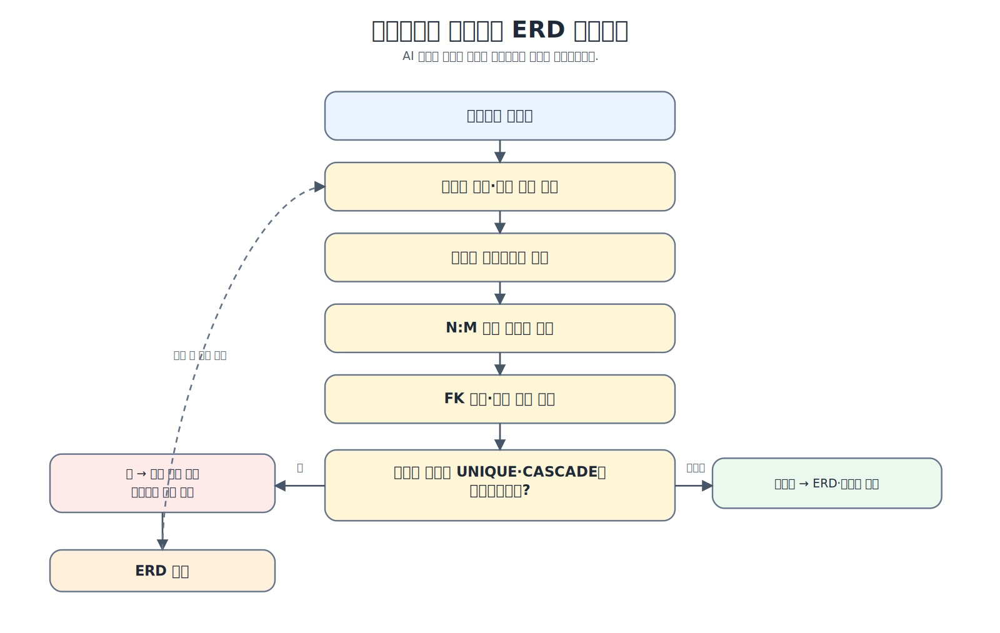
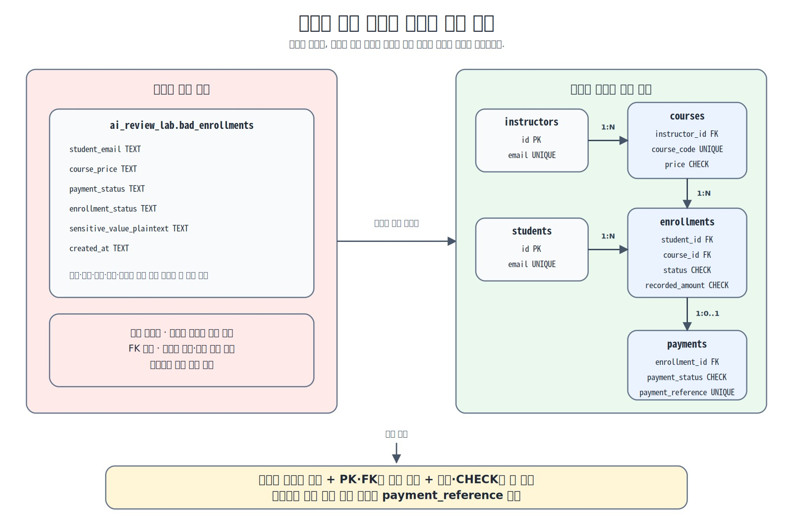
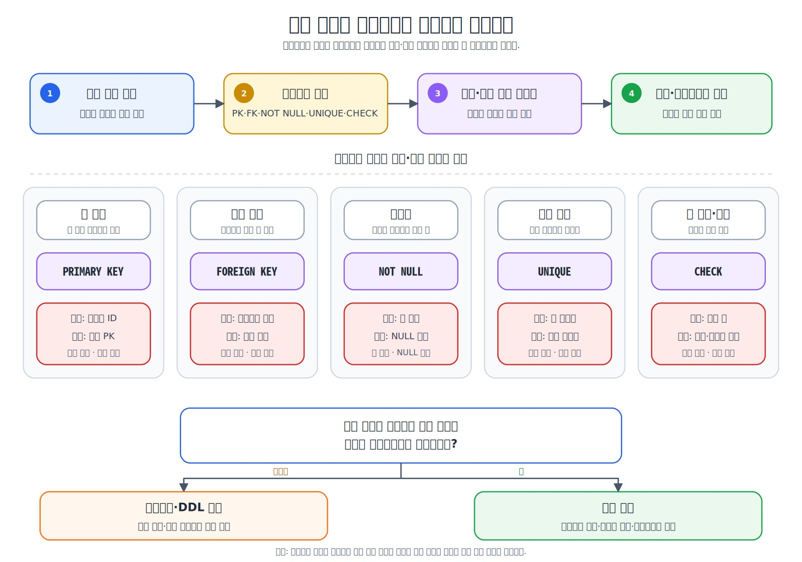
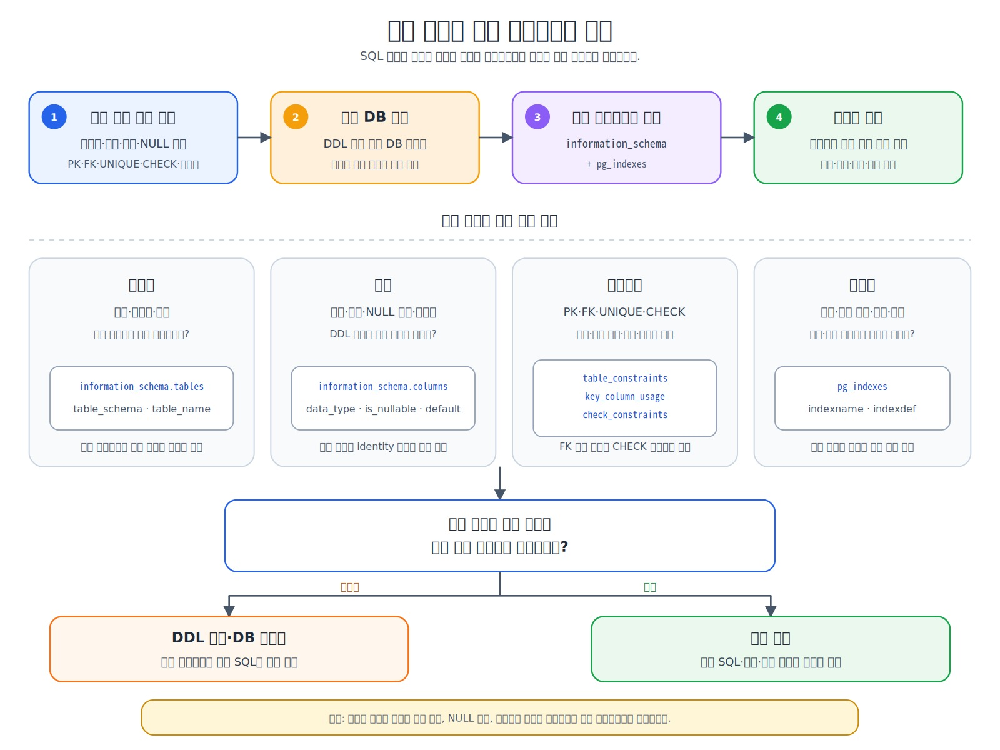
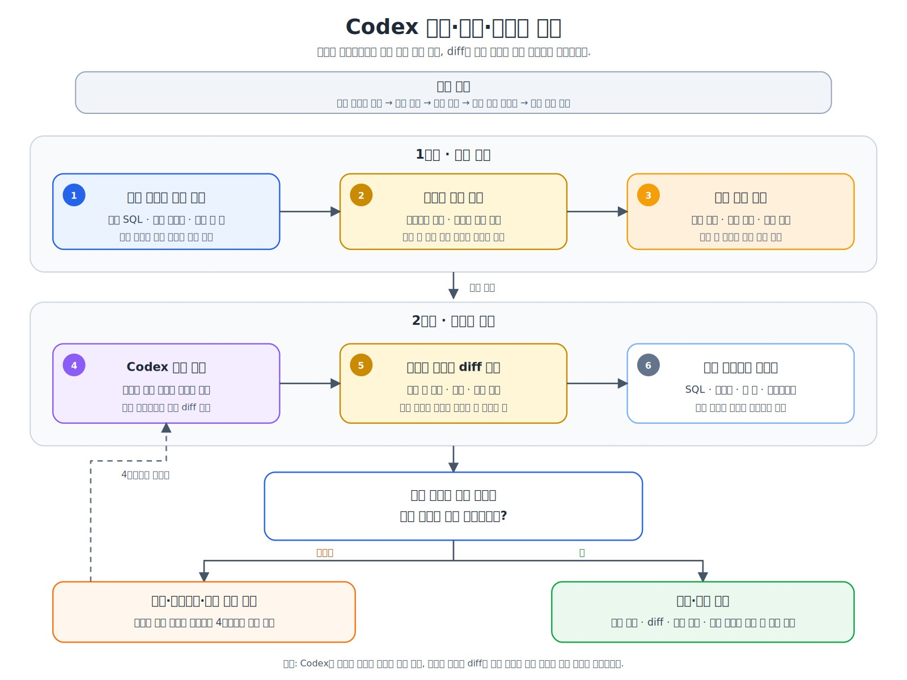

AI와 실행 증거로 데이터베이스 설계 검증하기
ChatGPT와 Codex가 만든 설계와 SQL을 그대로 승인하지 않고, 확인된 요구사항·격리 환경의 실제 메타데이터·정상/경계/반례 테스트·업무 정합성·파일 diff를 실행 증거로 연결해 데이터베이스 변경 후보를 검증하는 방법을 익힙니다.
요구사항·메타데이터·반례·정합성·diff를 어떤 증거로 연결해야 승인할 수 있을까?
이 장에서 살펴볼 내용
Chapter 12에서는 원본의 책임과 조회 패턴을 기준으로 RDBMS, JSONB와 NoSQL 후보를 비교했습니다. 저장소 유형을 결정한 뒤에도 테이블·관계·제약조건·SQL이 실제 업무 규칙과 맞는지 검증해야 합니다.
ChatGPT와 Codex 같은 AI 도구는 요구사항 정리, 설계 대안 비교, DDL·테스트 SQL 작성과 저장소 파일 수정 속도를 높일 수 있습니다. 그러나 AI가 만든 SQL이 실행된다는 사실은 설계가 올바르다는 뜻이 아닙니다.
요구사항에 없는 UNIQUE가 추가될 수 있다.
삭제 정책이 미확정인데 CASCADE가 적용될 수 있다.
LEFT JOIN의 NULL 때문에 결제 누락을 발견하지 못할 수 있다.
현재 강의 가격과 신청 시점 금액을 같은 값으로 오해할 수 있다.
운영 데이터에 DROP·DELETE를 실행하는 스크립트가 만들어질 수 있다.
실제 비밀번호·이메일·접속 URL이 프롬프트나 테스트 데이터에 포함될 수 있다.
이 장에서는 다음 검토 흐름을 사용합니다.
확인된 요구사항·결정·미확정 정책 정리
→ AI에 전달할 문맥 묶음 작성
→ ERD·DDL·SQL 초안 생성
→ 수정 범위와 금지 범위 확인
→ 격리된 ai_review_lab에 생성
→ 정상 데이터·경계값·반례·메타데이터 검증
→ 업무 정합성 조회
→ 파일별 diff와 파괴적 변경 검토
→ 전체 자동 판정
→ 검증 증거·남은 가정 기록
→ 사람이 승인·조건부 승인·보류·거절 결정
핵심 원칙
AI 결과는 정답이 아니라 변경 후보입니다. 요구사항 추적, 실제 생성 구조, 정상·경계값·실패 테스트와 변경 diff가 모두 확인되어야 승인할 수 있습니다.
1. AI가 빠르게 만드는 것과 사람이 책임질 것은 다르다
AI는 짧은 시간에 엔터티 후보, 관계, PostgreSQL DDL, 샘플 데이터와 검증 SQL을 제안할 수 있습니다. 하지만 업무 정책의 사실 여부와 변경 위험을 스스로 책임질 수는 없습니다.

그림 13-1 AI 기반 DB 설계 검증 전체 흐름
검토의 기준은 다음 연결입니다.
확인된 요구사항
→ ERD와 DDL의 반영 위치
→ 실제 PostgreSQL 메타데이터
→ 정상 입력과 의도한 오류
→ 업무 정합성 결과
→ 변경 diff와 검토 기록
AI가 제시한 설명이 자연스럽거나 SQL이 문법적으로 성공해도 이 연결이 끊기면 검토가 끝난 것이 아닙니다.
2. ChatGPT·Codex·사람의 권장 협업 흐름
ChatGPT와 Codex의 지원 기능과 사용 환경은 바뀔 수 있으며 서로 겹치는 기능도 있습니다. 이 장의 구분은 제품의 절대 기능 경계가 아니라 데이터베이스 작업을 안전하게 진행하기 위한 권장 흐름입니다. 2026년 8월 출판 검수 시점의 OpenAI 공식 안내는 Chat을 빠른 대화형 지원, Work를 더 길고 여러 단계인 작업과 완성된 산출물, Codex를 소프트웨어 개발·기술 작업에 맞춘 환경으로 설명합니다. 제공 범위는 플랜·워크스페이스·사용 화면에 따라 달라질 수 있으므로 실제 사용 시 최신 공식 안내를 다시 확인합니다.

그림 13-2 ChatGPT·Codex·사람의 협업 흐름
| 참여자 | 활용하기 좋은 작업 | 맡기면 안 되는 최종 결정 |
|---|---|---|
| ChatGPT Chat | 요구사항 구조화, 설계 대안·검토 질문·프롬프트 초안 | 미확정 업무 정책 확정 |
| ChatGPT Work | 긴 다단계 검토, 자료 분석, 검토 보고서 같은 완성 산출물 작성 지원 | 실행 증거 없이 변경 승인 |
| Codex | 저장소 탐색, 대상 파일 수정, SQL·테스트 작성, diff·실행 지원 | 변경 자동 승인 |
| 사람 | 요구사항 확인, 데이터·권한·운영 범위 결정, 실행 결과와 diff 검토 | 최종 책임을 AI에 이전 |
정책을 사람이 확인한다.
AI가 초안을 만든다.
격리 환경에서 실행한다.
증거를 수집한다.
사람이 승인한다.
3. AI에 전달할 설계 문맥 묶음
좋은 결과를 얻으려면 질문 한 줄이 아니라 검토 가능한 문맥을 제공해야 합니다.
| 문맥 항목 | 포함할 내용 |
|---|---|
| 업무 목표 | 무엇을 저장하고 어떤 질문에 답해야 하는가 |
| 확인 요구사항 | 이미 담당자와 합의된 규칙 |
| 결정·단순화 | 이번 실습에서 명시적으로 선택한 범위 |
| 미확정 정책 | AI가 임의로 확정하면 안 되는 질문 |
| DB 환경 | PostgreSQL, DB, 스키마, 버전 의존 기능 여부 |
| 현재 구조 | 기존 테이블·제약조건·인덱스·행 수 |
| 대표 데이터 | 가상 정상값·경계값·반례 |
| 수정 범위 | 수정할 파일·스키마·객체 |
| 금지 범위 | 변경하지 않을 파일·데이터·권한 |
| 검증 기준 | 기대 행 수, 메타데이터, SQLSTATE, constraint name, 0행 검증 |
| 완료 보고 | 변경 파일, 이유, 실행 결과, 미실행 항목, 남은 가정 |
프롬프트에 실제 개인정보, 비밀번호, API 키, 전체 접속 URL이나 운영 데이터 샘플을 넣지 않습니다. 오류 재현에 필요한 기술 정보는 유지하되 식별 정보와 비밀은 마스킹합니다.
4. 요구사항·결정·미확정 정책을 ID로 분리한다
앞 장의 ID와 섞이지 않도록 Chapter 13 범위를 표시합니다.
P13-Rxx → 확인된 요구사항
P13-Dxx → 결정·단순화·미확정 정책
P13-Txx → 테스트
P13-Vxx → 실행·검증 단계
확인된 요구사항
| ID | 확인된 요구사항 | 설계 반영 | 검증 증거 |
|---|---|---|---|
| P13-R01 | 학생 이메일은 공백이 아니며 정확히 같은 문자열이 중복될 수 없다 | students.email UNIQUE + 공백 CHECK |
중복·공백 입력 차단 |
| P13-R02 | 강사 이메일은 공백이 아니며 정확히 같은 문자열이 중복될 수 없다 | instructors.email UNIQUE + 공백 CHECK |
중복·공백 입력 차단 |
| P13-R03 | 강의는 강사 한 명을 참조한다 | courses.instructor_id FK |
FK 메타데이터 |
| P13-R04 | 학생과 강의는 N:M 관계다 | enrollments 중간 테이블 |
FK 2개와 JOIN |
| P13-R05 | 수강 상태는 허용값만 사용한다 | status CHECK |
잘못된 상태 차단 |
| P13-R06 | 가격과 금액은 음수가 될 수 없다 | 금액 CHECK | 음수·0 경계 테스트 |
| P13-R07 | 결제는 수강신청을 참조한다 | payments.enrollment_id FK |
FK 메타데이터 |
| P13-R08 | 실제 카드번호·CVV를 저장하지 않는다 | 가상 외부 payment_reference만 사용하며 실제 참조값의 보호 수준은 조직 정책으로 결정 |
컬럼·Seed·흐름 검토 |
| P13-R09 | 신청·수강중은 학생·강의 조합당 최대 한 건이다 | 부분 고유 인덱스 | 활성 중복 차단 |
P13-R09는 Chapter 07에서 이미 확정한 정책을 유지합니다.
격리 시나리오 주의 Chapter 13의
payments는ai_review_lab에서 AI 설계 검토 방법을 연습하기 위해 추가한 가상 테이블입니다.course_project에 결제·환불 원장이 생겼다는 뜻이 아닙니다. 기존 프로젝트의enrollments.recorded_amount NUMERIC(12,0)는 계속 신청 시점 기록 금액이며 결제 승인액·환불 반영 순액·회계 매출이 아닙니다.
CREATE UNIQUE INDEX uq_ai_review_enrollments_active
ON ai_review_lab.enrollments (student_id, course_id)
WHERE status IN ('신청', '수강중');
전체 (student_id, course_id) UNIQUE와 다릅니다. 완료·취소 이력 뒤 재신청은 허용합니다.
결정과 범위
| ID | 질문 | 현재 처리 |
|---|---|---|
| P13-D01 | 완료·취소 이력 뒤 재신청 | 허용 |
| P13-D02 | 결제 이력 | 현재 결제 상태 한 건만 저장하는 단순 모델 |
| P13-D03 | 삭제 정책 | RESTRICT |
| P13-D04 | 개인정보 보관 기간 | 조직 정책 필요 |
| P13-D05 | 상태 전이 순서 | 별도 서비스 정책·검증 필요 |
| P13-D06 | 환불 범위 | 전액 결제·전액 환불 샘플, 부분 환불 원장은 범위 밖 |
| P13-D07 | 이메일 대소문자 | 정확 문자열 비교, 정규화는 별도 결정 |
| P13-D08 | 결제 없는 신청 | 허용 |
확정되지 않은 규칙은 근거 없이 UNIQUE, NOT NULL, CASCADE나 트리거로 고정하지 않습니다.
5. 요구사항 추적표와 결정 기록
| 요구사항 ID | AI 초안 반영 | 발견 문제 | 수정 파일·위치 | 검증 증거 | 상태 |
|---|---|---|---|---|---|
| P13-R01 | |||||
| P13-R02 | |||||
| P13-R03 | |||||
| P13-R04 | |||||
| P13-R05 | |||||
| P13-R06 | |||||
| P13-R07 | |||||
| P13-R08 | |||||
| P13-R09 |
검증 증거는 구체적이어야 합니다.
03_good_design_schema.sql의 제약조건·부분 고유 인덱스 이름
05_metadata_validation.sql의 정확한 FK 4개
07_negative_tests.sql의 actual_sqlstate와 actual_constraint
06_business_validation.sql의 이상 조회 0행
08_ai_review_lab_validation.sql의 최종 통과 메시지
git diff에서 ai_review_lab 외 객체 변경 없음
6. 실행 가능한 프롬프트는 계약처럼 작성한다

그림 13-3 실행 가능한 DB 작업 프롬프트의 구성
목표
확인된 요구사항
결정·미확정 정책
현재 DB와 스키마
수정 대상 파일
수정 금지 범위
허용되는 파괴적 작업
정상·경계값·오류 검증 기준
완료 보고 형식
예시:
PostgreSQL 온라인 강의 DB 설계를 검토해 주세요.
확인된 요구사항:
- P13-R01~P13-R09
결정·미확정 정책:
- P13-D01~P13-D08
범위:
- ai_review_lab만 생성·검토
- course_project와 다른 Chapter 스키마 변경 금지
- 역할·권한 변경 금지
- 자동 DROP 금지
검증:
- 기준 행 3/3/2/3/4/4
- 정상 JOIN 4
- 정확한 FK 4개와 제약조건 이름
- SQLSTATE와 constraint name
- 반례·정상 경계값 30/30
- 업무 이상 0행
- IDENTITY 다음 값 > 현재 최대 ID
7. ERD는 요구사항을 기준으로 검토한다

그림 13-4 요구사항을 기준으로 ERD 검토하기
핵심 엔터티가 빠지거나 근거 없이 추가되지 않았는가?
한 테이블이 하나의 주요 역할을 담당하는가?
학생과 강의의 N:M 관계가 enrollments로 해소되었는가?
강사와 강의의 1:N 관계 방향이 올바른가?
결제와 신청의 관계가 현재 가정과 맞는가?
관계의 필수성·선택성과 삭제 정책이 명확한가?
미확정 정책이 전체 UNIQUE나 CASCADE로 고정되지 않았는가?
이 장의 단순화된 카디널리티:
instructors 1 → 0..N courses
students 1 → 0..N enrollments
courses 1 → 0..N enrollments
enrollments 1 → 0..1 payments
마지막 관계는 현재 결제 상태 한 건만 저장한다는 P13-D02 가정입니다. 결제 시도·실패·재결제·부분환불 이력을 모두 저장하려면 1:N 결제 원장으로 바꾸어야 합니다.
8. 역할이 섞인 테이블과 분리된 설계 비교

그림 13-5 역할이 섞인 설계와 분리된 설계
bad_enrollments는 학생·강의·강사·신청·결제 정보를 한 행에 저장합니다.
이름·이메일 반복
모든 값을 TEXT로 저장
FK 없음
상태값 자유 입력
날짜를 자유 문자열로 저장
민감정보를 평문으로 저장하는 나쁜 예
가상 민감값은 실제 카드번호 형태가 아닌 TEST-SENSITIVE-PLAINTEXT-01처럼 명확한 테스트 문자열만 사용합니다.
| 테이블 | 주요 역할 |
|---|---|
students |
학생 기본 정보 |
instructors |
강사 기본 정보 |
courses |
강의 현재 정보와 기본 가격 |
enrollments |
학생·강의 관계와 신청 시점 기록 금액 |
payments |
현재 결제 상태와 가상 외부 참조값 |
9. 타입과 제약조건을 업무 의미로 검토한다

그림 13-6 업무 규칙을 제약조건과 테스트로 검증하기
| 업무 규칙 | 설계 | 검증 |
|---|---|---|
| 행 식별 | IDENTITY PRIMARY KEY |
PK·시퀀스 메타데이터 |
| 존재하는 부모 참조 | 명시적 FK | 없는 ID 입력 차단 |
| 이메일 중복·공백 금지 | UNIQUE + CHECK |
중복·공백 입력 차단 |
| 활성 신청 중복 금지 | 부분 고유 인덱스 | 같은 활성 조합 차단 |
| 허용 상태 | CHECK | 잘못된 상태 차단 |
| 금액 0 이상 | CHECK | 음수 실패·0 성공 |
| 결제·환불 시각 | 복합 CHECK | 잘못된 조합 차단 |
| 카드번호 미저장 | 전용 컬럼 없음·외부 참조값 | 컬럼·Seed·흐름 검토 |
상태 CHECK는 허용 단어만 제한합니다. 신청 → 수강중 → 완료 같은 상태 전이 순서까지 자동으로 검증하지는 않습니다.
10. 이메일 UNIQUE의 범위를 명확히 한다
현재 설계는 다음을 보장합니다.
NULL 불가
공백 문자열 불가
정확히 같은 문자열 중복 불가
다음 두 값은 현재 서로 다른 문자열입니다.
Kim@example.com
kim@example.com
저장 전 소문자 정규화, 대소문자 비구분 인덱스 또는 별도 자료형 사용 여부는 P13-D07로 남깁니다. AI가 이를 임의 확정해서는 안 됩니다.
공백 CHECK는 이메일 외에도 다음 필드에 적용합니다.
instructors.specialty
courses.course_code
courses.title
payments.payment_reference
11. 현재 가격·신청 시점 기록 금액·결제금액은 시점이 다르다
courses.price
= 현재 기본 강의 가격
enrollments.recorded_amount
= 신청 시점에 확정된 금액
payments.amount
= 현재 결제 상태에 기록된 금액
현재 가격과 신청 시점 기록 금액이 달라도 할인·가격 변경일 수 있습니다. 샘플에서는 한 행이 다릅니다.
반면 P13-D06의 단순 예제에서는 신청 시점 기록 금액과 결제 기록 금액이 같아야 합니다. 부분 결제·부분 환불을 지원한다면 결제 원장과 환불 금액 모델을 새로 설계해야 합니다.
12. 결제 시각과 환불 시각을 분리한다
기존의 paid_at 하나로 환불 시점까지 표현하면 의미가 모호합니다. 이 장은 다음 두 컬럼을 사용합니다.
paid_at
→ 결제가 완료된 시각
refunded_at
→ 환불이 완료된 시각
| 상태 | paid_at | refunded_at |
|---|---|---|
| 결제대기·결제실패 | NULL | NULL |
| 결제완료 | NOT NULL | NULL |
| 환불 | NOT NULL | NOT NULL, paid_at 이후 |
환불 행의 amount는 최초 전액 결제 금액입니다. 부분 환불 금액과 다중 환불 이벤트는 이번 단순 모델 범위 밖입니다.
13. Chapter 13 실습은 별도 스키마에서 단계별로 실행한다
course_project: 변경 금지
transaction_lab: 변경 금지
performance_lab: 변경 금지
security_lab: 변경 금지
nosql_lab: 변경 금지
ai_review_lab: Chapter 13 전용
파일 구조:
code/chapter13/
├── 01_ai_review_lab_schema.sql
├── 02_bad_design_seed.sql
├── 03_good_design_schema.sql
├── 04_good_design_seed.sql
├── 05_metadata_validation.sql
├── 06_business_validation.sql
├── 07_negative_tests.sql
├── 08_ai_review_lab_validation.sql
├── AI_REVIEW_REPORT_TEMPLATE.md
├── PROMPT_TEMPLATES.md
├── reset_ai_review_lab.sql
├── ai_db_design_review_practice.sql
└── README.md
실행 순서:
01 보호 검사·격리 스키마와 나쁜 테이블 생성
→ 02 나쁜 데이터 3행·IDENTITY 조정
→ 03 좋은 설계와 활성 신청 인덱스 생성
→ 04 정상 데이터·IDENTITY 조정
→ 05 정확한 메타데이터 검증
→ 06 NULL 안전 업무 정합성 검증
→ 07 반례 24개·정상 경계값 6개
→ 08 최종 자동 검증
→ 보고서에 요구사항·diff·증거 기록
생성 파일은 자동 DROP을 실행하지 않습니다. 01_ai_review_lab_schema.sql은 Chapter 07·08 canonical 데이터뿐 아니라 Chapter 07 명명 제약조건 15개, NOT NULL 열 20개, 현재 역할의 ai_database_book CREATE 권한을 DDL 전에 확인합니다. Chapter 11의 security_lab이나 Chapter 12의 nosql_lab 존재 자체를 시작 조건으로 요구하지는 않습니다. 처음부터 다시 시작할 때만 보호된 reset_ai_review_lab.sql을 사용합니다.
14. 재현 가능한 샘플과 IDENTITY
| 항목 | 행 수 | 명시적 ID | 다음 값 |
|---|---|---|---|
| bad_enrollments | 3 | 1~3 | 4 이상 |
| students | 3 | 101~103 | 104 이상 |
| instructors | 2 | 201~202 | 203 이상 |
| courses | 3 | 301~303 | 304 이상 |
| enrollments | 4 | 1001~1004 | 1005 이상 |
| payments | 4 | 9001~9004 | 9005 이상 |
이 장의 ID 컬럼은 GENERATED BY DEFAULT AS IDENTITY를 사용합니다. INSERT에서 ID를 직접 지정하면 그 값이 우선 사용되므로 내부 시퀀스가 그 값에 맞춰 자동으로 이동하지 않습니다. 그래서 Seed 파일은 ALTER TABLE ... RESTART WITH로 다음 자동값을 명시적으로 조정합니다.
반대로 자동 ID를 요청해 시퀀스 값이 발급된 뒤 트랜잭션이 취소되어도 그 값은 일반적으로 재사용을 위해 회수되지 않습니다. 오류·경계값 테스트는 기준 상태를 보호하기 위해 명시적 테스트 ID와 하위 트랜잭션을 사용하며, 자동 번호의 공백 자체는 정합성 오류로 보지 않습니다.
15. 실제 생성된 메타데이터를 정확히 확인한다

그림 13-7 예상 설계와 실제 메타데이터 비교
단순 개수만 확인하면 잘못된 객체가 하나 빠지고 관련 없는 객체가 하나 추가된 상태를 놓칠 수 있습니다.
정확한 테이블 이름 6개
좋은 설계 제약조건 29개
정확한 FK 이름·출발 컬럼·대상 컬럼 4개
ON DELETE RESTRICT 또는 NO ACTION
IDENTITY id 컬럼 6개
활성 신청 부분 고유 인덱스
05_metadata_validation.sql은 조건이 다르면 예외를 발생시킵니다.
16. 정상 경계값과 반례를 함께 테스트한다
오류 테스트만 하면 제약조건이 필요 이상으로 강해 정상 데이터를 막는 문제를 발견하기 어렵습니다.
예상 실패 반례 24개
중복·공백 학생 이메일
중복 강사 이메일·공백 전문분야
없는 강사·학생·강의·수강신청 FK
잘못된 level·수강 상태·결제 상태
음수 가격·신청 시점 기록 금액·결제 상태 기록 금액
활성 신청 중복
결제·환불 시각 조합 위반
공백·중복 payment_reference
한 신청에 결제 두 건
정상 경계값 6개
가격 0
한 글자 이름·제목
description NULL
결제 없는 신청
완료·취소 이력 뒤 재신청
결제실패 + 금액 0 + 시각 NULL
07_negative_tests.sql은 다음을 구조적으로 기록합니다.
expected_sqlstate / actual_sqlstate
expected_constraint / actual_constraint
actual_table / actual_column
actual_result / detail
GET STACKED DIAGNOSTICS로 실제 제약조건 이름을 확인합니다. 같은 SQLSTATE가 발생했다는 사실만으로 의도한 규칙이 작동했다고 단정하지 않습니다.
전체 27
통과 27
unexpected 0
기준 행 수 유지
17. LEFT JOIN의 NULL을 놓치지 않는다
다음 조건은 결제 누락을 발견하지 못할 수 있습니다.
p.payment_status <> '결제완료'
p.payment_status가 NULL이면 비교 결과는 TRUE가 아니라 UNKNOWN입니다.
필수 결제 누락까지 찾으려면 다음처럼 작성합니다.
p.payment_status IS DISTINCT FROM '결제완료'
이 장의 샘플 규칙:
완료 → 결제완료 필수
취소 → 환불 필수
신청 → 결제 없음 허용, 있으면 결제대기
수강중 → 결제 없음 허용, 있으면 결제완료
이는 샘플 시나리오이며 실제 서비스의 상태 전이 전체를 의미하지 않습니다.
18. 제약조건 이후에도 업무 정합성 검증이 필요하다
06_business_validation.sql의 이상 조회는 모두 0행이어야 합니다.
학생·강사 이메일 중복
필수 문자열 공백
신청 시점 기록 금액·결제 상태 기록 금액 불일치
결제·환불 시각 조합 위반
고아 학생·강의·결제 참조
활성 신청 중복
샘플 수강·결제 상태 조합 위반
현재 가격과 신청 시점 기록 금액 차이는 정보용 1행입니다. 결과가 있어도 자동 오류가 아닙니다.
19. 실제 카드번호 미저장은 여러 증거로 검토한다
컬럼 이름에 card가 없다는 사실만으로 실제 카드번호 미저장을 완전히 증명할 수 없습니다. 민감값이 value, memo, reference, metadata 같은 일반 이름에 들어갈 수도 있습니다.
P13-R08 증거:
카드번호·CVV·비밀번호 전용 컬럼 없음
payment_reference는 실습용 가상 외부 참조값이며 실제 보호 수준은 조직 정책으로 판단
Seed가 PAY-REVIEW-TEST-* 가상값만 사용
실제 데이터·로그·프롬프트에 민감 패턴 없음
애플리케이션이 카드정보를 DB로 전달하지 않는 흐름 검토
20. 최종 자동 판정 파일을 실행한다
08_ai_review_lab_validation.sql은 다음을 한 번에 판정합니다.
Chapter 07 원본 신청 5행 유지
Chapter 07 명명 제약조건 15개 / NOT NULL 열 20개 유지
기준 행 수 3/3/2/3/4/4
정상 JOIN 4
정확한 테이블 집합
제약조건 29·FK 4·IDENTITY 6
활성 신청 부분 고유 인덱스
필수 문자열·고아 관계·활성 중복 0
금액·시간·상태 조합 위반 0
가격 차이 정보용 1행
모든 IDENTITY 다음 값 > 현재 최대 ID
같은 세션이면 07의 30/30 결과 재확인
통과 메시지:
Chapter 13 AI review lab validation passed
07과 08을 다른 세션에서 실행했다면 07의 자체 30/30 통과 메시지를 별도 실행 증거로 기록합니다.
21. 파괴적 SQL과 마이그레이션 제안을 별도로 검토한다
DROP TABLE / DROP SCHEMA
TRUNCATE
조건 없는 UPDATE / DELETE
ALTER COLUMN TYPE
SET NOT NULL
UNIQUE 추가
ON DELETE CASCADE
인덱스 삭제
권한 GRANT·REVOKE
검토 질문:
대상 환경과 스키마가 명시되었는가?
기존 데이터가 새 제약조건을 통과하는가?
잠금 시간과 서비스 중단 가능성을 검토했는가?
백업·롤백·복구 절차가 있는가?
변경 전후 검증 SQL이 있는가?
미확정 정책을 DB 규칙으로 고정하지 않았는가?
22. Codex 변경 후 diff·재실행·승인 루프

그림 13-8 Codex 변경·검증·재수정 루프
1. 오류와 기대 결과를 같은 조건에서 재현한다.
2. 비밀번호·접속 정보·개인정보를 제거한다.
3. 수정 대상과 금지 범위를 지정한다.
4. 최소 변경을 요청한다.
5. 파일별 diff를 사람이 검토한다.
6. 관련 없는 변경을 제거한다.
7. 격리 스키마를 다시 생성한다.
8. 01→08 검증을 실행한다.
9. 실패하면 원인과 프롬프트를 수정한다.
10. 통과하면 증거·남은 가정·승인 상태를 기록한다.
| 영역 | 확인 질문 |
|---|---|
| 범위 | 요청한 파일·스키마만 변경되었는가? |
| 요구사항 | P13-R01~R09가 유지되었는가? |
| 정책 | P13-D01~D08과 충돌하지 않는가? |
| 데이터 | 실제 개인정보와 비밀이 포함되지 않았는가? |
| 파괴적 변경 | DROP·DELETE·ALTER 범위가 명확한가? |
| 테스트 | 정상·경계값·반례·메타데이터·정합성 검증이 갱신되었는가? |
| 문서 | README·워크북·기대 결과가 코드와 일치하는가? |
23. 검토 상태는 명시적으로 기록한다
| 상태 | 의미 |
|---|---|
| 승인 | 모든 필수 요구사항과 실행 증거가 충족됨 |
| 조건부 승인 | 제한된 환경·데이터에서만 사용 가능하며 후속 조치가 있음 |
| 보류 | 정책 결정 또는 실행 증거가 부족함 |
| 거절 | 요구사항 위반, 보안 위험 또는 파괴적 변경 위험이 큼 |
검증하지 않은 항목은 통과로 표시하지 않습니다.
24. 자주 하는 실수
- 실행 가능한 SQL을 검토된 설계로 판단한다.
- 앞 장에서 확정한 활성 신청 정책을 다시 미확정으로 되돌린다.
- 전체 복합 UNIQUE와 부분 고유 인덱스를 구분하지 않는다.
- 명시적 ID 입력 뒤 IDENTITY 시작값을 조정하지 않는다.
- LEFT JOIN의 NULL을 일반 비교로 검사한다.
- 결제 시각과 환불 시각을 한 컬럼으로 모호하게 표현한다.
- SQLSTATE만 보고 의도한 제약조건에서 실패했다고 단정한다.
- 오류 테스트만 하고 정상 경계값을 확인하지 않는다.
- 컬럼명 검사만으로 민감정보 부재를 증명했다고 생각한다.
- AI가 수정한 전체 diff를 확인하지 않는다.
- 검증하지 않은 항목을 통과로 기록한다.
25. 스스로 확인하기
- AI가 만든 SQL이 실행되어도 설계 검증이 끝나지 않는 이유는 무엇인가요?
- P13-R, P13-D, P13-T, P13-V를 분리하는 이유는 무엇인가요?
- 전체
(student_id, course_id) UNIQUE와 활성 상태 부분 고유 인덱스의 차이는 무엇인가요? - 명시적 ID 입력 뒤 IDENTITY 시작값을 조정해야 하는 이유는 무엇인가요?
- 정확 문자열 이메일 UNIQUE와 대소문자 정책의 차이는 무엇인가요?
courses.price,enrollments.recorded_amount,payments.amount의 의미를 설명해 보세요.paid_at과refunded_at을 분리한 이유는 무엇인가요?- LEFT JOIN 검증에서
IS DISTINCT FROM이 필요한 이유는 무엇인가요? - SQLSTATE와 constraint name을 함께 기록하는 이유는 무엇인가요?
- 정상 경계값과 실패 반례는 각각 무엇을 증명하나요?
- 카드번호 미저장을 컬럼명 검사만으로 증명할 수 없는 이유는 무엇인가요?
- 승인·조건부 승인·보류·거절의 차이는 무엇인가요?
26. 권장 해설
실행 성공은 문법·참조 가능성을 보여 줄 뿐 업무 요구사항 충족을 증명하지 않는다.
확인 요구사항은 제약조건과 테스트로 추적하고 미확정 정책은 결정 기록에 남긴다.
전체 UNIQUE는 모든 이력을 막을 수 있다.
부분 고유 인덱스는 신청·수강중 중복만 막고 완료·취소 이력을 보존한다.
IDENTITY는 명시적 ID 입력으로 자동 이동하지 않는다.
ROLLBACK 후 자동 번호 공백은 정상일 수 있다.
LEFT JOIN의 오른쪽 값이 NULL이면 <> 비교는 UNKNOWN이다.
필수 값 누락까지 찾으려면 IS DISTINCT FROM 또는 명시적 NULL 조건을 사용한다.
SQLSTATE는 오류 종류이고 constraint name은 실제로 차단한 규칙이다.
둘을 함께 기록해야 의도한 제약조건이 작동했는지 확인할 수 있다.
27. 핵심 정리
1. AI 결과는 요구사항과 실행 증거로 검토할 변경 후보다.
2. 확인 요구사항·결정·미확정 정책·테스트·검증 ID를 분리한다.
3. 앞 장에서 확정한 정책과 장 간 연속성을 유지한다.
4. 격리 스키마 생성·Seed·초기화에 실제 보호 구문을 둔다.
5. 명시적 ID 입력 뒤 IDENTITY 다음 값을 조정한다.
6. 정상·경계값·반례·메타데이터·업무 정합성을 모두 검증한다.
7. LEFT JOIN의 NULL과 정확한 제약조건 이름을 확인한다.
8. 결제·환불 시각과 금액의 소유자·시점을 명확히 한다.
9. Codex 변경은 파일별 diff와 01→08 재실행 결과를 사람이 검토한다.
10. 미실행 항목·남은 가정·승인 상태를 기록한다.
이 장에서 기억할 문장은 다음과 같습니다.
AI가 만든 설계의 품질은 설명의 자연스러움이 아니라,
요구사항과 실행 증거를 얼마나 추적할 수 있는지로 판단한다.
28. 다음 장에서는
Chapter 14에서는 SQL로 분석 질문에 답하고 Python으로 결과를 확장·교차 검증하는 방법을 다룹니다.
분석 질문과 기준 행 정의
집계·윈도우 함수
분석 결과 검산
PostgreSQL과 Python 연결
pandas 기반 후속 분석
SQL 결과와 Python 결과 대조
AI가 만든 분석 SQL·Python 코드 검증
AI가 분석 코드를 생성했다는 사실만으로 결과가 올바른 것은 아닙니다. 분석 대상·분모·기간·중복·NULL 처리와 SQL·Python 결과를 사람이 확인해야 합니다.